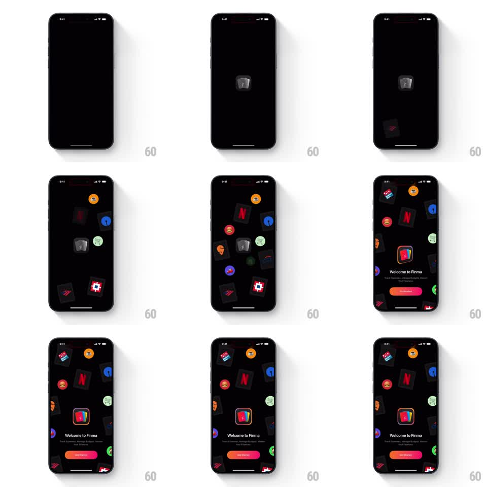

Media
Frame-by-frame

Rebuild this animation 1:1: Finma's splash intro - a small grayscale logo materializes on the black screen, merchant icons burst radially out from behind it, the logo snaps to full color, and the icons settle at the edges as "Welcome to Finma" and the Get Started pill rise in.

Rebuild this animation 1:1: Finma's splash intro - a small grayscale logo materializes on the black screen, merchant icons burst radially out from behind it, the logo snaps to full color, and the icons settle at the edges as "Welcome to Finma" and the Get Started pill rise in. ## Integration Integration: stack-agnostic spec - springs given as stiffness/damping, timed motions as duration + curve; map every value to your framework and animation library of choice. ## Scene Black splash screen. A small grayscale Finma logo (rounded-square F mark) at center. A burst of merchant icons (Netflix, McDonald's, grocery, coffee, shopping squares and circles) radiating outward; the logo pops into full color (rainbow gradient F). Bottom: "Welcome to Finma" title, subcopy, orange-red gradient "Get Started" pill. ## Motion spec Pattern: radial burst with springy settle. - The logo fades in at center (opacity + scale 0.8 -> 1, 300ms, ease-out), grayscale. - After a beat (200ms), 8-10 merchant icons spawn behind the logo (scale 0) and fly radially outward along distributed angles (400ms, ease-out), each with slight rotation (+-20deg) and scale up to 1. - As icons pass mid-flight, the logo snaps to full color (crossfade, 150ms) with a pop (scale 1 -> 1.12 -> 1, spring ~340/14). - Icons overshoot their edge positions and settle with a spring bounce (spring ~300/15, 300ms), ending scattered around the screen perimeter. - "Welcome to Finma", subcopy, and the Get Started pill slide up from below (translateY 24pt -> 0, opacity, 350ms, 60ms stagger) as icons settle. ## Calibration - The burst reads as an explosion from a single point - all icons share the logo's center as origin. - The grayscale-to-color snap is the climax; keep it mid-burst, not at the end. ## Reduced motion The logo and icons fade in at final positions (300ms); copy slides up normally. ## Don't miss - Icons keep small random tilts after settling - they look tossed, not placed. - The Get Started pill keeps its orange-to-red gradient.